| A.1 | Verbot der Durchfahrt (allgemeines Zeichen); (§ 3.25 Nr. 1 Buchstabe b, § 6.08 Nr. 2, § 6.16 Nr. 4, § 6.22 Nr. 1, § 6.22a, § 6.25 Nr. 1, § 6.27 Nr. 1, § 6.28a Nr. 3, § 9.02 Nr. 5 und 6 und § 10.01 Nr. 4 Buchstabe c) | |
| entweder Tafeln | 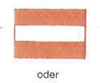 | |
| oder rote Lichter | 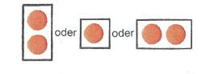 | |
| oder rote Flaggen. | 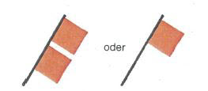 | |
| Werden zwei Lichter oder zwei Flaggen übereinander gezeigt, bedeutet dies ein langdauerndes Verbot. | ||
| A.1a | Gesperrte Wasserflächen; jedoch für Kleinfahrzeuge ohne Antriebsmaschine befahrbar. (§ 6.22 Nr. 2 Buchstabe a) | 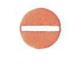 |
| A.2 | Überholverbot, allgemein. (§ 6.11) | 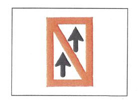 |
| A.3 | Überholverbot für Verbände untereinander. Dies gilt nicht, wenn einer der Verbände ein Schubverband ist, dessen Länge 110,00 m und dessen Breite 12,00 m nicht über schreitet. (§ 6.11) | 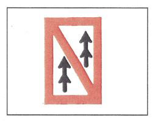 |
| A.4 | Verbot des Begegnens und Überholverbot. (§ 6.08 Nr. 1) | 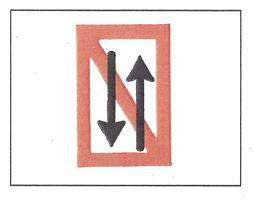 |
| A.5 | Stilliegeverbot auf der Seite der Wasserstraße, auf der das Tafelzeichen steht. (§ 7.02 Nr. 1 Buchstabe c) | 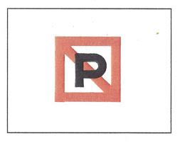 |
| A.5.1 | Stilliegeverbot auf der Wasserfläche, deren Breite, gemessen vom Aufstellungsort, auf dem Tafelzeichen in Metern angegeben ist. (§ 7.02 Nr. 1 Buchstabe 1) | 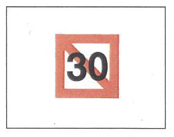 |
| A.6 | Ankerverbot und Verbot des Schleifenlassens von Ankern, Trossen oder Ketten auf der Seite der Wasserstraße, auf der das Tafelzeichen steht. (§ 6.18 Nr. 2 und § 7.03 Nr. 1 Buchstabe b) | 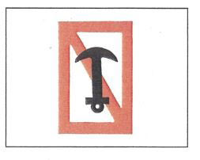 |
| A.7 | Festmacheverbot am Ufer auf der Seite der Wasserstraße, auf der das Tafelzeichen steht. (§ 7.04 Nr. 1 Buchstabe b) | 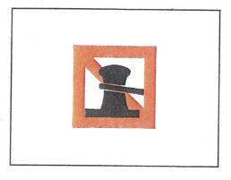 |
| A.8 | Wendeverbot. (§ 6.13 Nr. 4) | 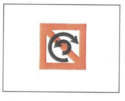 |
| A.9 | Vermeidung von Wellenschlag (§ 6.20 Nummer 1 Buchstabe e und § 15.07 Nummer 8 Buchstabe b) | 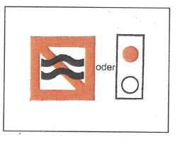 |
| A.10 | Verbot, außerhalb der angezeigten Begrenzung zu fahren. (§ 6.24 Nr. 2 Buchstabe a) | 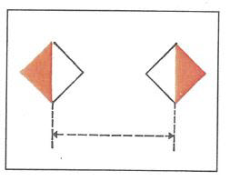 |
| A.11 | Verbot der Einfahrt; die Vorbereitungen zur Fortsetzung der Fahrt sind jedoch zu treffen (§ 6.28a Nr. 1 Buchstabe c) | 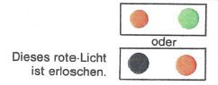 |
| A.12 | Fahrverbot für Fahrzeuge mit Maschinenantrieb. (§ 6.22 Nr. 2 Buchstabe b) | 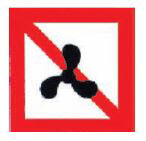 |
| A.13 | (ohne Inhalt) | |
| A.14 | Verbot des Wasserskilaufens. | 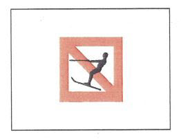 |
| A.15 | Fahrverbot für Segelfahrzeuge. | 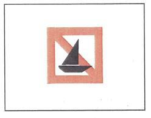 |
| A.16 | Fahrverbot für Fahrzeuge, die weder mit Maschinenantrieb noch unter Segel fahren. | 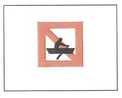 |
| A.17 | Verbot des Segelsurfens. | 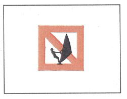 |
| A.18 | Fahrverbot für Wassermotorräder (Waterscooter, Jetski usw.). | 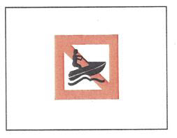 |
| B.1 | Gebot, die durch den Pfeil angezeigte Richtung einzuschlagen. (§ 6.12) | 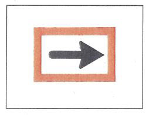 |
| B.2 |
| 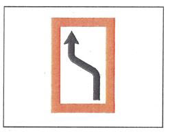 |
| 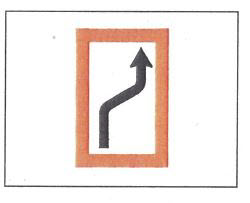 | |
| B.3 |
| 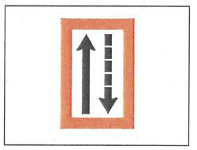 |
| 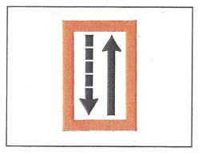 | |
| B.4 |
| 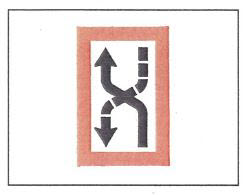 |
| 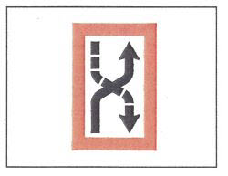 | |
| B.5 | Gebot, unter bestimmten Voraussetzungen anzuhalten. (§ 6.28 Nr. 1) | 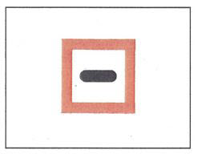 |
| B.6 | Gebot, die angegebene Geschwindigkeit (in km/Std.) nicht zu überschreiten. | 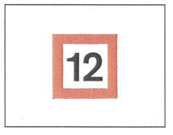 |
| B.7 | Gebot, Schallsignal zu geben. | 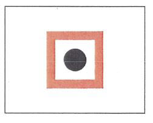 |
| B.8 | Gebot, besondere Vorsicht walten zu lassen. (§ 6.08 Nr. 2) | 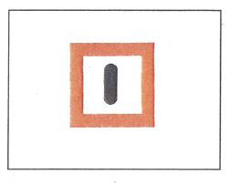 |
| B.9 |
| 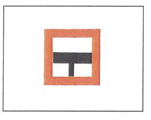 |
| 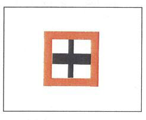 | |
| B.10 | (ohne Inhalt) | |
| B.11 |
| |
| 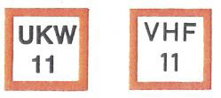 | |
| B.12 | Gebot zur Nutzung von Landstromanschlüssen (§ 7.06 Nr. 3) | 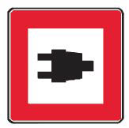 |
| C.1 | Die Fahrwassertiefe ist begrenzt. | 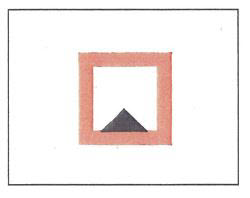 |
| C.2 | Die lichte Höhe über dem Wasserspiegel ist begrenzt. | 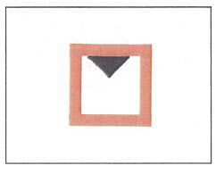 |
| C.3 | Die Breite der Durchfahrtsöffnung oder der Fahrrinne ist begrenzt. | 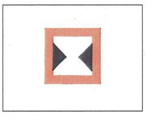 |
| C.4 | Es bestehen Schiffahrtsbeschränkungen; sie sind auf einer zusätzlichen Tafel unter dem Schiffahrtszeichen angegeben. | 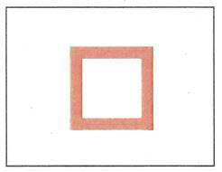 |
| C.5 | Die Fahrrinne ist am rechten (linken) Ufer eingeengt; die Zahl auf dem Zeichen gibt den Abstand in Metern an, in dem sich die Fahrzeuge vom Tafelzeichen entfernt halten sollen. | 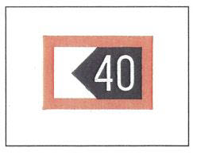 |
| D.1 | Empfohlene Durchfahrtsöffnung | |
| ||
| 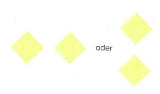 | |
| D.2 | Empfehlung, sich in dem durch die Tafeln begrenzten Raum zu halten. (§ 6.24 Nr. 2 Buchstabe b) | 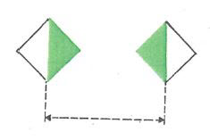 |
| D.3 | Empfehlung, in der Richtung des Pfeils zu fahren; | 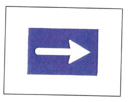 |
| in der Richtung vom festen Licht zum Gleichtaktlicht zu fahren. | 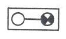 |
| E.1 | Erlaubnis zur Durchfahrtsöffnung (allgemeines Zeichen). (§ 3.25 Nr. 1 Buchstabe a, § 6.08 Nr. 2, § 6.27 Nr. 2 und § 6.28a) | 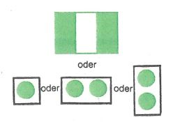 |
| E.2 | Kreuzung einer Hochspannungsleitung. | 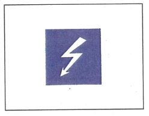 |
| E.3 | Wehr | |
| E.4a | Nicht frei fahrende Fähre. | 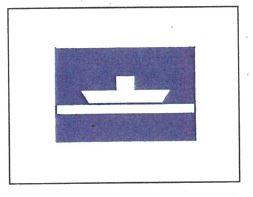 |
| E.4b | Frei fahrende Fähre | 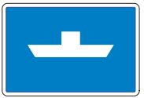 |
| E.5 | Erlaubnis zum Stilliegen auf der Seite der Wasserstraße, auf der das Zeichen steht. (§ 7.05 Nr. 1) | 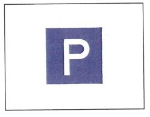 |
| E.5.1 | Erlaubnis zum Stilliegen auf der Wasserfläche, deren Breite, gemessen vom Aufstellungsort, auf dem Tafelzeichen in Metern angegeben ist. (§ 7.05 Nr. 2) | |
| E.5.2 | Erlaubnis zum Stilliegen auf der Wasserfläche zwischen den zwei Entfernungen, die, gemessen vom Aufstellungsort, auf dem Tafelzeichen in Metern angegeben sind. (§ 7.05 Nr. 3) | |
| E.5.3 | Höchstzahl der Fahrzeuge, die auf der Seite der Wasserstraße, auf der das Tafelzeichen steht, nebeneinander stilliegen dürfen. (§ 7.05 Nr. 4) | |
| E.5.4 | Liegestelle für Fahrzeuge der Schubschiffahrt, die nicht die Zeichen nach § 3.14 führen müssen. (§ 7.06 Nr.1) | |
| E.5.5 | Liegestelle für Fahrzeuge der Schubschiffahrt, die die Zeichen nach § 3.14 Nr. 1 führen müssen. (§ 7.06 Nr. 1) | |
| E.5.6 | Liegestelle für Fahrzeuge der Schubschiffahrt, die die Zeichen nach § 3.14 Nr. 2 führen müssen. (§ 7.06 Nr. 1) | |
| E.5.7 | Liegestelle für Fahrzeuge der Schubschiffahrt, die die Zeichen nach § 3.14 Nr. 3 führen müssen. (§ 7.06 Nr.1) | |
| E.5.8 | Liegestelle für andere Fahrzeuge als Fahrzeuge der Schubschiffahrt, die nicht die Zeichen nach § 3.14 führen müssen. (§ 7.06 Nr.1) | |
| E.5.9 | Liegestelle für andere Fahrzeuge als Fahrzeuge der Schubschiffahrt, die die Zeichen nach § 3.14 Nr. 1 führen müssen. (§ 7.06 Nr. 1) | |
| E.5.10 | Liegestelle für andere Fahrzeuge als Fahrzeuge der Schubschiffahrt, die die Zeichen nach § 3.14 Nr. 2 führen müssen. (§ 7.06 Nr. 1) | |
| E.5.11 | Liegestelle für andere Fahrzeuge als Fahrzeuge der Schubschiffahrt, die die Zeichen nach § 3.14 Nr. 3 führen müssen. (§ 7.06 Nr.1) | |
| E.5.12 | Liegestelle für alle Fahrzeuge, die kein Zeichen nach § 3.14 führen müssen. (§ 7.06 Nr. 1) | |
| E.5.13 | Liegestelle für alle Fahrzeuge, die die Zeichen nach § 3.14 Nr. 1 führen müssen. (§ 7.06 Nr.1) | |
| E.5.14 | Liegestelle für alle Fahrzeuge, die die Zeichen nach § 3.14 Nr. 2 führen müssen. (§ 7.06 Nr. 1) | |
| E.5.15 | Liegestelle für alle Fahrzeuge, die die Zeichen nach § 3.14 Nr. 3 führen müssen. (§ 7.06 Nr. 1) | |
| E.6 | Erlaubnis zum Ankern auf der Seite der Wasserstraße, auf der das Tafelzeichen steht. (§ 7.03 Nr. 2) | |
| E.6.1 | Erlaubnis zur Benutzung von Ankerpfählen auf der Seite der Wasserstraße, auf der das Tafelzeichen steht. (§ 7.03 Nr. 3) | |
| E.7 | Erlaubnis zum Festmachen am Ufer auf der Seite der Wasserstraße, auf der das Tafelzeichen steht. (§ 7.04 Nr. 2) | |
| E.7.1 | Erlaubnis zum Festmachen am Ufer für das sofortige Ein- oder Ausladen eines Kraftwagens (§ 7.04 Nr. 2) | |
| E.8 | Hinweis auf eine Wendestelle. (§§ 6.13 und 7.02 Nr. 1 Buchstabe i) | |
| E.9 |
| |
| ||
| ||
| E.10 |
| |
| ||
| E.11 | Ende des Verbots oder eines Gebots, das nur in einer Verkehrsrichtung gilt, oder Ende einer Einschränkung. | |
| E.12 | (ohne Inhalt) | |
| E.13 | Trinkwasserzapfstelle. | |
| E.14 | Fernsprechstelle. | |
| E.15 | (ohne Inhalt) | |
| E.16 | (ohne Inhalt) | |
| E.17 | Wasserskistrecke. | |
| E.18 | Fahrerlaubnis für Segelfahrzeuge. | |
| E.19 | Fahrerlaubnis für Fahrzeuge, die weder mit Maschinenantrieb noch unter Segel fahren. | |
| E.20 | Erlaubnis zum Segelsurfen. | |
| E.21 | Nautischer Informationsfunkdienst. Beispiel: Kanal 18 | |
| E.22 | Fahrerlaubnis für Wassermotorräder (Waterscooter, Jetski usw.). | |
| E.23 | Hochwassermarken. | |
| Marke I Bezugswasserstand | ||
| Marke II Bezugswasserstand | ||
| Die Marken sind in heller Farbe auf dunklem Untergrund oder in dunkler Farbe auf hellem Untergrund angebracht. | ||
| E.24 | Ohne Inhalt | |
| E.25 | Landstromanschluss vorhanden | |
| (§ 6.16 Nr. 4) |
Anschluss für 400 V~ vorhanden |